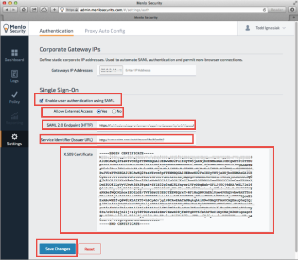

Login to the Menlo Security Admin Portal here: https://admin.menlosecurity.com.
Enter the following information (see screen shot at end of step for reference):
Gateways IP Addresses: Enter the corporate gateway IP address(es) where user traffic will originate. SAML authentication will be automatically used for users coming from this IP address.
Select Enable user authentication using SAML.
Allow External Access: Choose whether external access is allowed, or whether SAML authentication is limited to requests from the specified Gateway IP address(es).
SAML 2.0 Endpoint (HTTP): Copy and paste the following:
Sign into the Okta Admin Dashboard to generate this variable.
Service Identifier (Issuer URL): Copy and paste the following:
Sign into the Okta Admin Dashboard to generate this variable.
X.509 Certificate: Copy and paste the following:
Sign into the Okta Admin Dashboard to generate this variable.
Click Save Changes.

Done!
Notes:
SP-initiated flows are supported.
IdP-initiated flows and Just In Time (JIT) provisioning are not supported